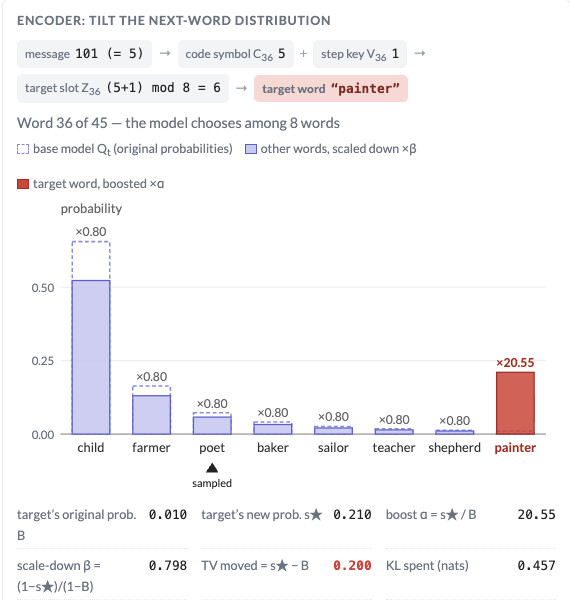

Blog
Explainers for my papers and notes on information theory, privacy, and trustworthy AI.
-

SimpleMark: Fast Multi-Bit Text Watermarking under f-Divergence Constraints
October 6, 2026
How to hide a message in LLM text while provably bounding what any detector can learn from each token. An interactive walkthrough of our multi-bit watermark, why exact distortion-freeness forces zero capacity, and how a per-key divergence budget turns detectability into a knob.